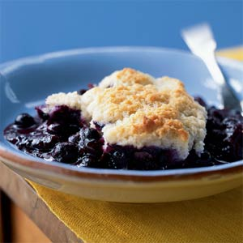

| Blueberry Cobbler | |
|---|---|
|  |
1. Preheat oven to 350°.
2. To prepare filling, combine first 4 ingredients in an 11 x 7-inch baking dish. To prepare topping, lightly spoon flour into dry measuring cups; level with a knife. Combine flour and next 4 ingredients (flour through baking soda) in a large bowl, stirring with a whisk. Cut in butter with a pastry blender or 2 knives until mixture resembles coarse meal. Stir in sour cream to form a soft dough. Drop dough by spoonfuls onto blueberry filling to form 8 dumplings. Brush dumplings with milk; sprinkle with 1 teaspoon sugar. Place baking dish on a jelly roll pan. Bake at 350° for 50 minutes or until filling is bubbly and dumplings are lightly browned. |